Anweisungen genau geben – Programmieren ohne Computer – Lesespurgeschichte mit Rätselaufgaben (Klasse 1)
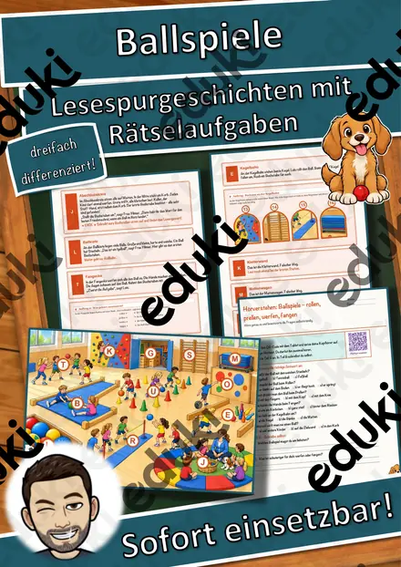
Ballspiele – rollen, prellen, werfen, fangen – Lesespurgeschichte mit Rätselaufgaben (Klasse 1)
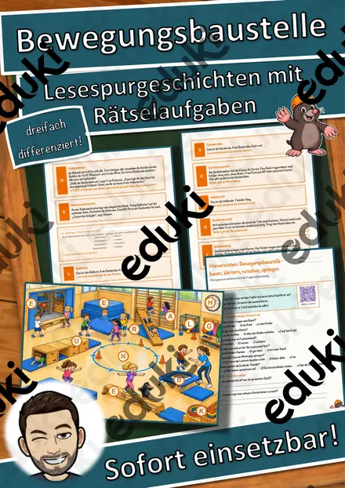
Bewegungsbaustelle – bauen, klettern, rutschen, springen – Lesespurgeschichte mit Rätselaufgaben (Klasse 1)
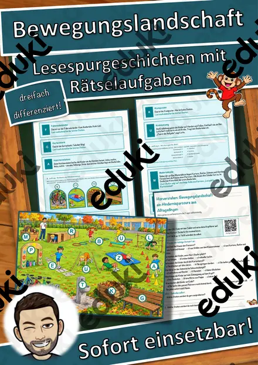
Bewegungslandschaft – ein Hindernisparcours aus Alltagsdingen – Lesespurgeschichte mit Rätselaufgaben (Klasse 1)
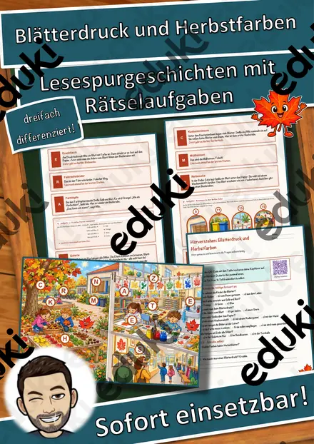
Blätterdruck und Herbstfarben – Lesespurgeschichte mit Rätselaufgaben (Klasse 1)

Bodypercussion – Musik mit dem Körper – Lesespurgeschichte mit Rätselaufgaben (Klasse 1)

Computer im Alltag – wo überall Computer stecken – Lesespurgeschichte mit Rätselaufgaben (Klasse 1)
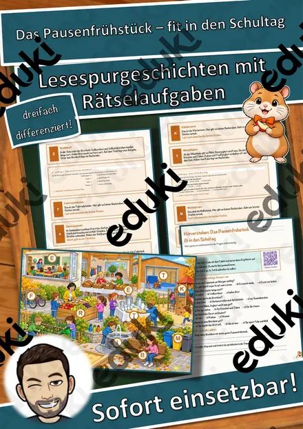
Das Pausenfrühstück – fit in den Schultag – Lesespurgeschichte mit Rätselaufgaben (Klasse 1)
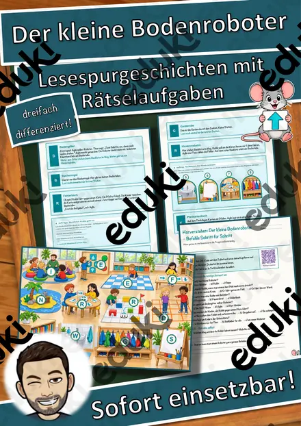
Der kleine Bodenroboter – Befehle Schritt für Schritt – Lesespurgeschichte mit Rätselaufgaben (Klasse 1)

Eine Klanggeschichte – Musik erzählt vom Wald – Lesespurgeschichte mit Rätselaufgaben (Klasse 1)
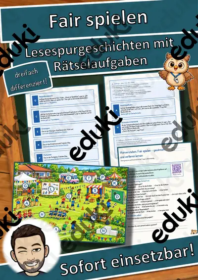
Fair spielen – gewinnen und verlieren lernen – Lesespurgeschichte mit Rätselaufgaben (Klasse 1)

Fair teilen und abgeben – Lesespurgeschichte mit Rätselaufgaben (Klasse 1)
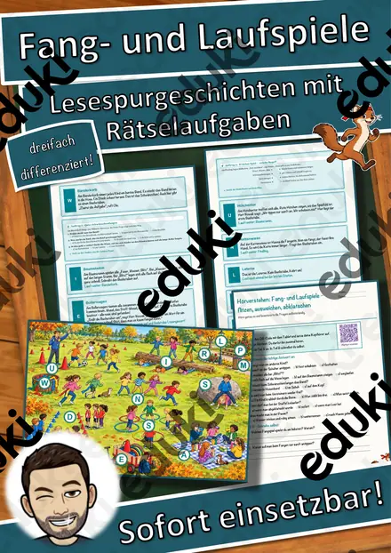
Fang- und Laufspiele – flitzen, ausweichen, abklatschen – Lesespurgeschichte mit Rätselaufgaben (Klasse 1)
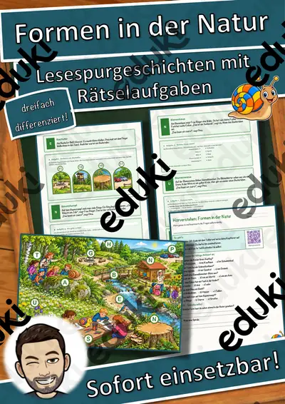
Formen in der Natur – Lesespurgeschichte mit Rätselaufgaben (Klasse 1)

Geheime Zeichen – Bildercodes und Symbole – Lesespurgeschichte mit Rätselaufgaben (Klasse 1)
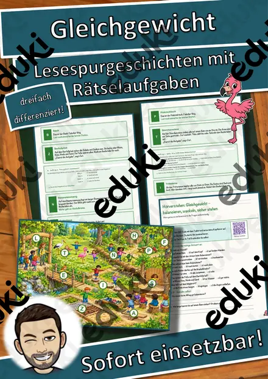
Gleichgewicht – balancieren, wackeln, sicher stehen – Lesespurgeschichte mit Rätselaufgaben (Klasse 1)

Instrumente selbst bauen – Musik aus Dose und Karton – Lesespurgeschichte mit Rätselaufgaben (Klasse 1)

Karneval der Tiere – Musik aus dem Zoo – Lesespurgeschichte mit Rätselaufgaben (Klasse 1)

Kinderlieder und Spiellieder – Singen macht Spaß – Lesespurgeschichte mit Rätselaufgaben (Klasse 1)
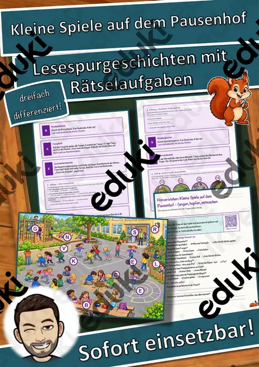
Kleine Spiele auf dem Pausenhof – fangen, hüpfen, mitmachen – Lesespurgeschichte mit Rätselaufgaben (Klasse 1)

Laut und leise, hoch und tief – Lesespurgeschichte mit Rätselaufgaben (Klasse 1)
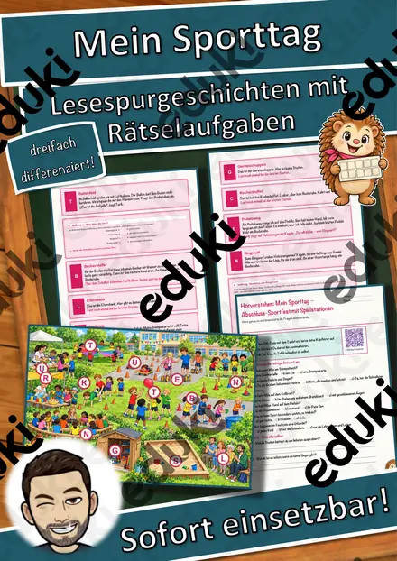
Mein Sporttag – Abschluss-Sportfest mit Spielstationen – Lesespurgeschichte mit Rätselaufgaben (Klasse 1)
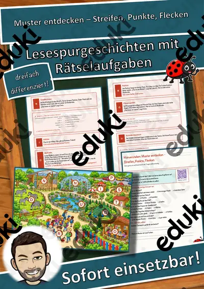
Muster entdecken – Streifen, Punkte, Flecken – Lesespurgeschichte mit Rätselaufgaben (Klasse 1)

Muster fortsetzen – Regeln finden wie ein Computer – Lesespurgeschichte mit Rätselaufgaben (Klasse 1)

Ohren auf! – Laute und leise Orte – Lesespurgeschichte mit Rätselaufgaben (Klasse 1)
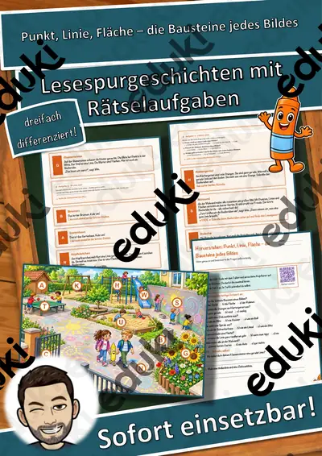
Punkt, Linie, Fläche – die Bausteine jedes Bildes – Lesespurgeschichte mit Rätselaufgaben (Klasse 1)
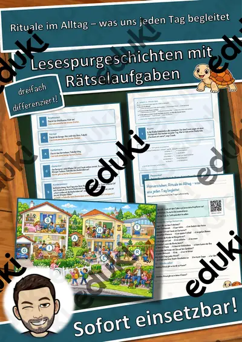
Rituale im Alltag – was uns jeden Tag begleitet – Lesespurgeschichte mit Rätselaufgaben (Klasse 1)

Salzteig-Anhänger – formen, trocknen, bemalen – Lesespurgeschichte mit Rätselaufgaben (Klasse 1)
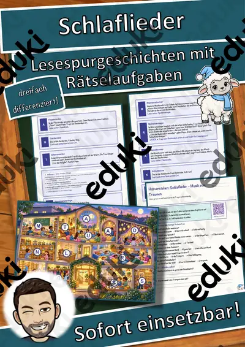
Schlaflieder – Musik zum Träumen – Lesespurgeschichte mit Rätselaufgaben (Klasse 1)
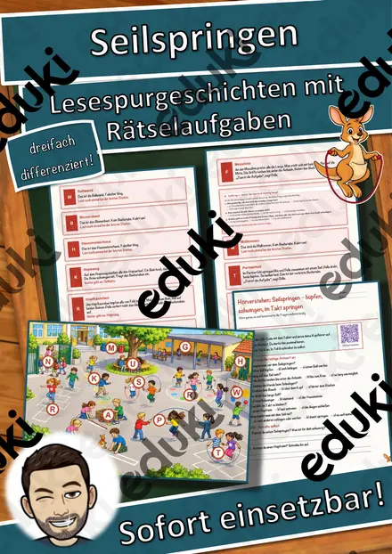
Seilspringen – hüpfen, schwingen, im Takt springen – Lesespurgeschichte mit Rätselaufgaben (Klasse 1)

Sortieren wie ein Computer – der Reihe nach – Lesespurgeschichte mit Rätselaufgaben (Klasse 1)
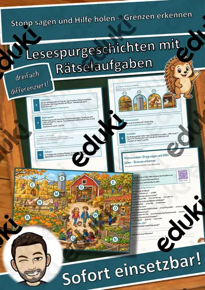
Stopp sagen und Hilfe holen – Grenzen erkennen – Lesespurgeschichte mit Rätselaufgaben (Klasse 1)
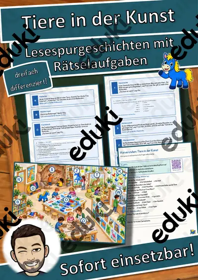
Tiere in der Kunst – Lesespurgeschichte mit Rätselaufgaben (Klasse 1)
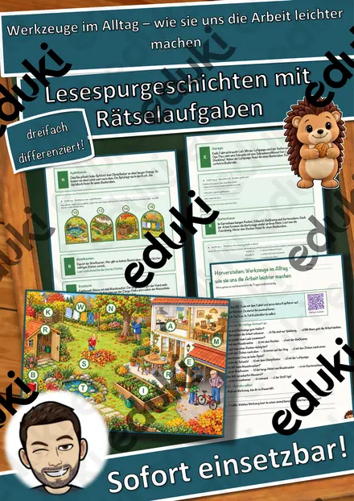
Werkzeuge im Alltag – wie sie uns die Arbeit leichter machen – Lesespurgeschichte mit Rätselaufgaben (Klasse 1)

Winterklänge – Musik im Schnee – Lesespurgeschichte mit Rätselaufgaben (Klasse 1)

Wir helfen einander – Lesespurgeschichte mit Rätselaufgaben (Klasse 1)
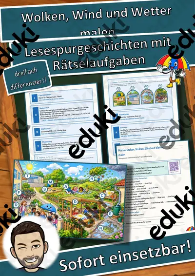
Wolken, Wind und Wetter malen – Lesespurgeschichte mit Rätselaufgaben (Klasse 1)

Wünsche und Bedürfnisse – was ich wirklich brauche – Lesespurgeschichte mit Rätselaufgaben (Klasse 1)